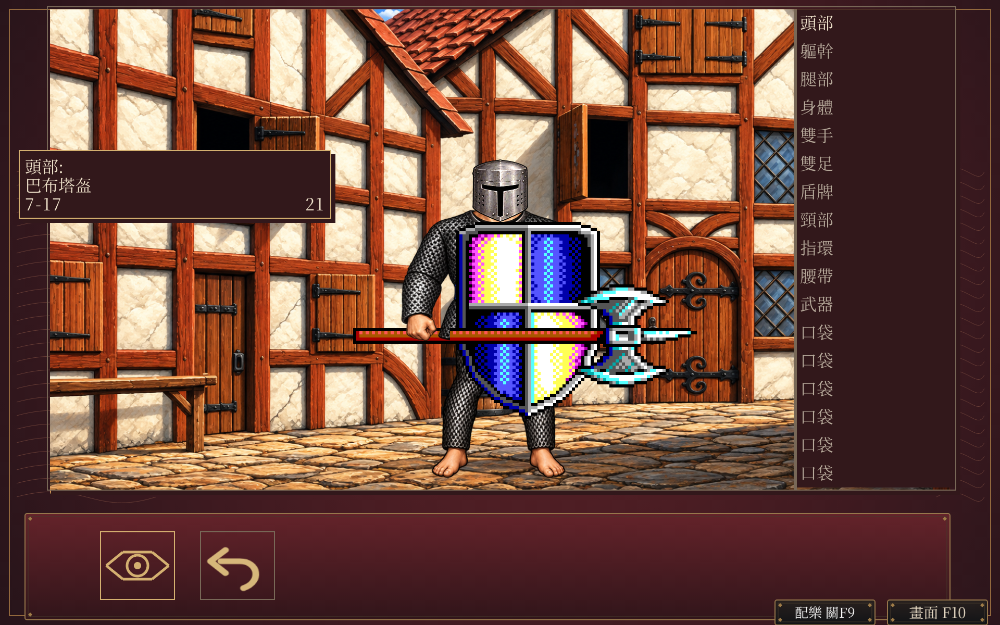
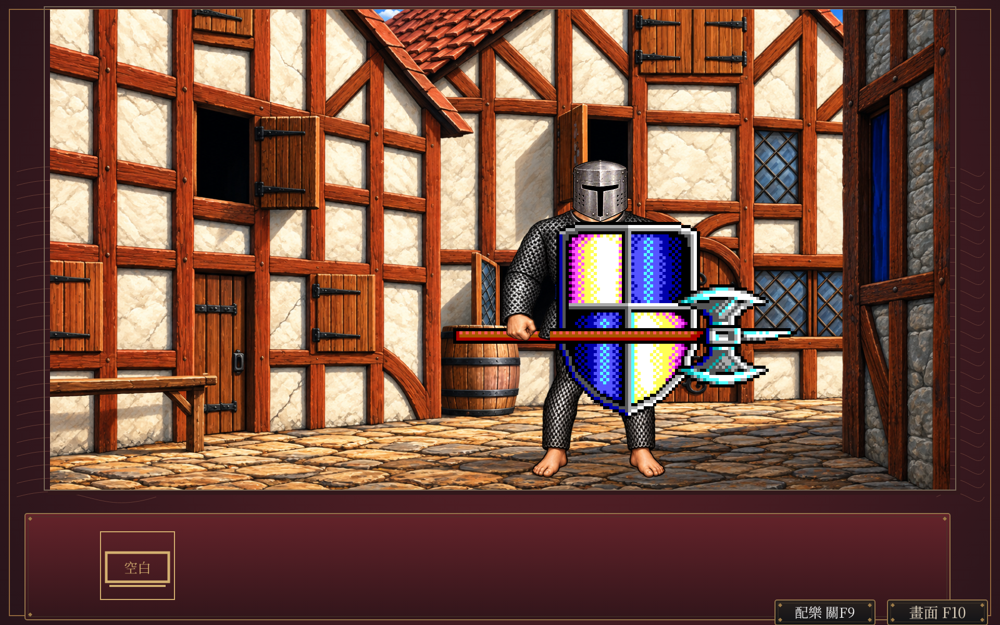
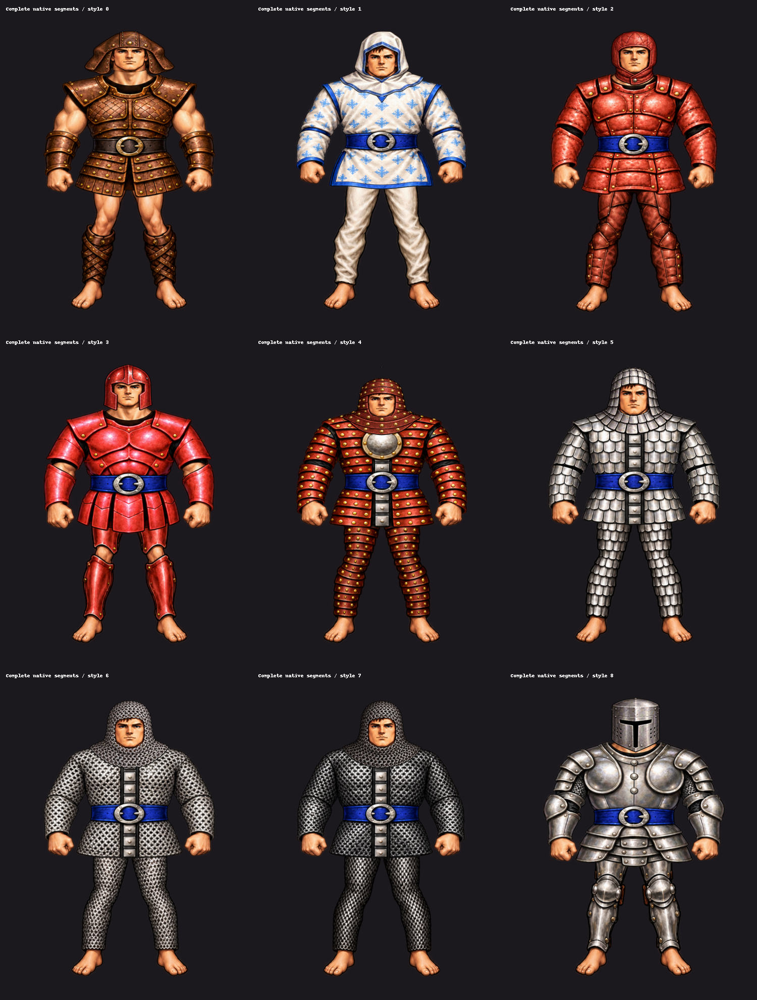
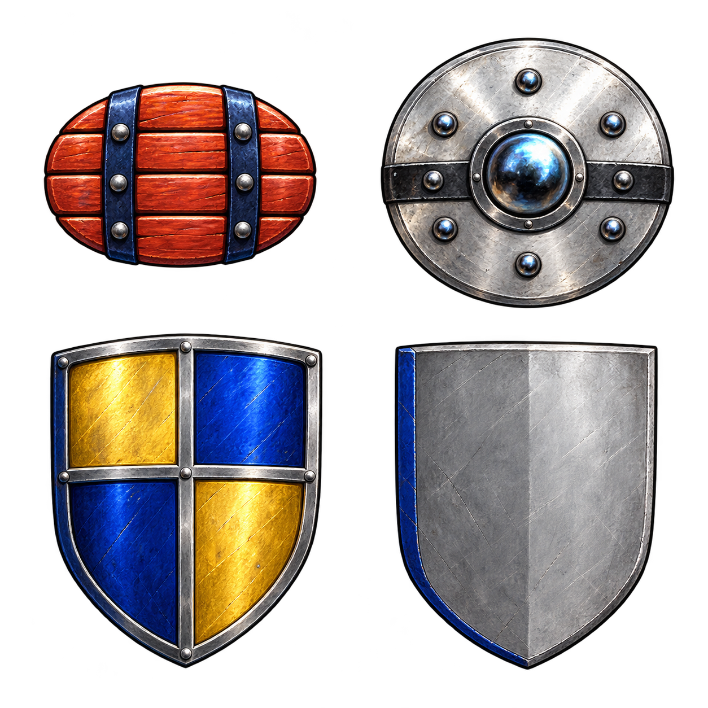

完整物品／隊伍頁 HD 原型
隔離原型，尚未接入正式版。下圖由正常標題與名冊選出 Kenneth，再用遊戲內 F10 切換。武器與盾牌仍為原圖，其餘體型尚待接入。
範圍與限制 · 驗證收據 · 生成提示與雜湊
完整物品頁
同一場景的重製 EGA／HD 原型，非原版 DOS 對拍。

960×600 實際視窗
隊伍頁
同一場景的重製 EGA／HD 原型，非原版 DOS 對拍。

960×600 實際視窗
物品與隊伍頁共四組鍵鼠往返、24個F10事件。完整Inn與隊伍狀態保持，完整HD畫格色差0；一色階限制保持。
九款人類男性部件接合示意
CPU圖層示意，非遊戲截圖；英文字標是驗證標籤。

四款盾牌候選，尚未接入

圖片只適用目前private儲存庫的PNG保存例外，未取得公開散布權。完整模型與存檔留本機。